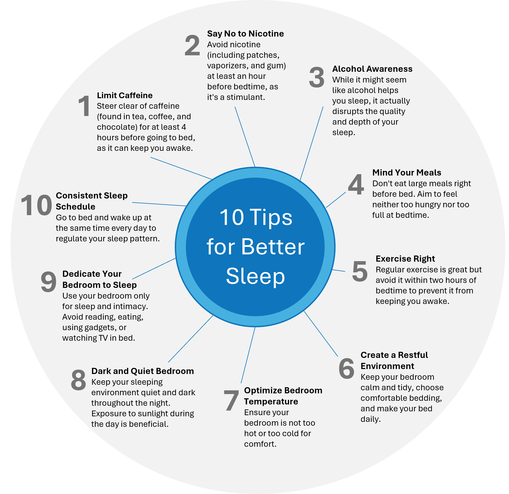

Strides For Better Sleep
Your Guide To Overcoming Sleep Obstacles
5 Sessions
Introduction
This intervention will help you know and understand the importance of sleep and definitive methods to use to get a better night's sleep without medication. Watch the introduction video below to begin.
Welcome to "Strides for Better Sleep," a program grounded in science and designed to improve your sleep quality through a variety of strategies. Whether used together or individually, these strategies aim to pinpoint and alter habits and routines that could be interfering with a good night's rest.
Sleep isn't just a nightly necessity—it's a pillar of our overall health and happiness. It plays a crucial role in our physical health, memory, focus, performance, mood, and overall sense of well-being. Experiencing trouble sleeping at some point is common for everyone, but persistent sleep issues can lead to feelings of sadness or anxiety. Given the vital role sleep plays in our daily lives, disruptions in our sleep pattern can significantly affect our day-to-day activities and how we feel overall.
Let's start the first session.
Session 1: Understanding the Importance of Sleep
Session Summary
In this first session, we delve into the essential function of rest in our lives, guided by our body clock and the need for sleep that intensifies the longer we're awake. We cycle through five stages of sleep throughout the night, each with distinct physical responses, from light dozing to the deep rest where dreams unfold.
We also offer practical tips for better sleep hygiene — from limiting caffeine to maintaining a consistent sleep routine — to help improve the quality of your rest.
Learning Objectives
- Understand the Role of the Body Clock in Sleep: Learn that sleep is a vital rest period controlled by how long we've been awake and our body clock, which together determine when we feel sleepy or alert.
- Recognize the Different Stages of Sleep: Identify the five stages of sleep, their functions, and learn how our body moves through these stages throughout the night.
- Adopt Habits for Better Sleep: Acquire knowledge about good sleep habits that can improve the quality of sleep, such as creating a comfortable sleep environment and maintaining a regular sleep schedule.
What is Sleep?
First, let's talk about what sleep actually is. Sleep is a time of rest and is regulated by two systems including our need for sleep and our internal body clock. As we stay awake longer, we feel sleepier—a sign our body needs rest. Our body clock, also known as the circadian rhythm, runs on a 24-hour cycle and affects functions like temperature, blood pressure, and hormone levels. Getting good sleep depends on these two systems working together.
Our internal clock runs on a 24-hour cycle and influences many functions in our body, including our temperature, blood pressure, and hormone levels.
If you look at the picture to the right, you will see both the awake section and the asleep section. When these two systems – the need for sleep and the circadian rhythm – are in sync, we tend to have good quality sleep.
The 5 Stages of Sleep
Now, let's dive into the stages of sleep. During the night, we go through five different stages of sleep, each lasting about 90 minutes. We cycle through these stages 4-5 times each night.
- S1. Transition to Sleep:
is when we start to fall asleep. Our muscles relax, and it's easy to wake up. - S2. Light Sleep:
Our breathing and heart rate slow down. We spend about half our sleep time in this stage. - S3. Deep Sleep:
Our breathing and heart rate are at their lowest, and it's harder to be woken up. - S4. Deeper Sleep:
Our breathing and heart rate are regular, and the muscle activity are at a minimum. - S5. REM Sleep:
This is where dreaming occurs. Our blood pressure and heart rate go up, but our body remains very still.
How Much Sleep Do We Really Need?
Everyone's sleep needs are different. Most adults need between 5 to 10 hours of sleep, with 7 hours being ideal for many. As we get older, our sleep patterns change, and we spend more time in lighter sleep stages (S1 & S2).
Improving Your Sleep: A Guide to Sleep Hygiene
Sleep Hygiene is about adopting a set of practices that can significantly enhance the quality of your sleep. If sleep has been elusive or not restful for you, trying out these guidelines comprehensively and consistently over time may offer substantial benefits.
Keep a Sleep Journal
To monitor the effectiveness of these strategies, maintain a sleep journal over the next two weeks.
Record the following:- 1. The times you go to bed at night and wake up in the morning.
- 2. When you first fell asleep and when you finally woke up.
- 3. Any periods you were awake during the night and for how long.
This journal will help you understand your sleep patterns, calculate sleep efficiency, and determine your average sleep duration weekly.
By closely following these steps and documenting your progress, you can significantly improve your sleep quality and overall well-being. Here is a sample Sleep Journal - you will have an opportunity to download the journal and you will learn more in Session 2.
Next Steps
Sleep is a complex, yet vital part of our lives. By understanding it better, we can take strides to improve our sleep quality, which benefits our overall health and happiness. Now, let's try to put these tips into practice and enjoy the restful sleep we all deserve!
Do the following:- 1. Download the Sleep Journal (PDF format) and start tracking your sleep for the next 14 days (we will discuss this more in the next session).
- 2. Review the Top 10 Tips for Better Sleep and do your best to adhere to them.
- 3. Test your knowledge (below) of what you have learned in this session.
Finish and Test Your Knowledge
Now it’s time to see how much you understood in this session. These questions are simply meant to help you get the most out of this session and are not graded or scored!
Click the test your knowledge and once you have finished it, the session will be submitted as complete.